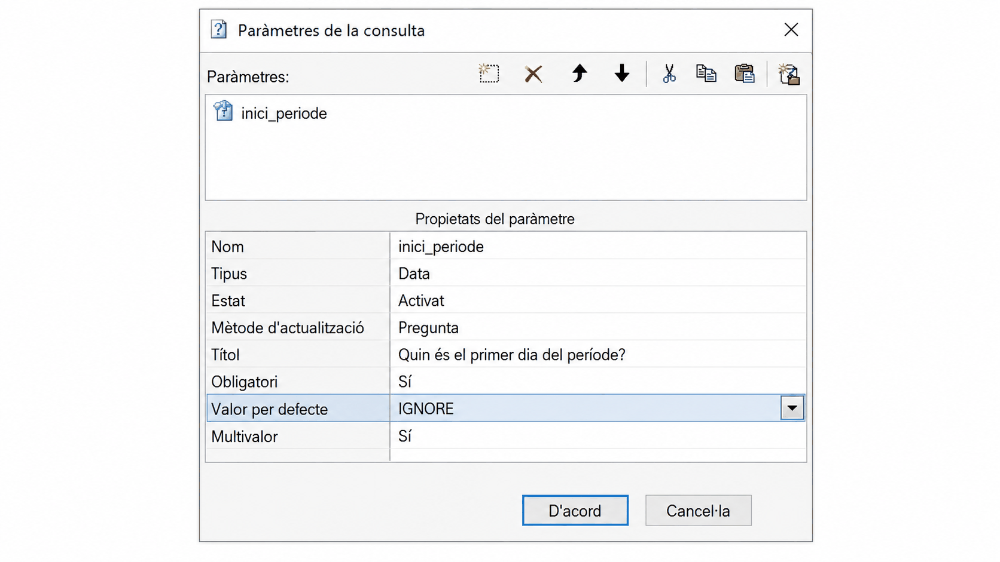
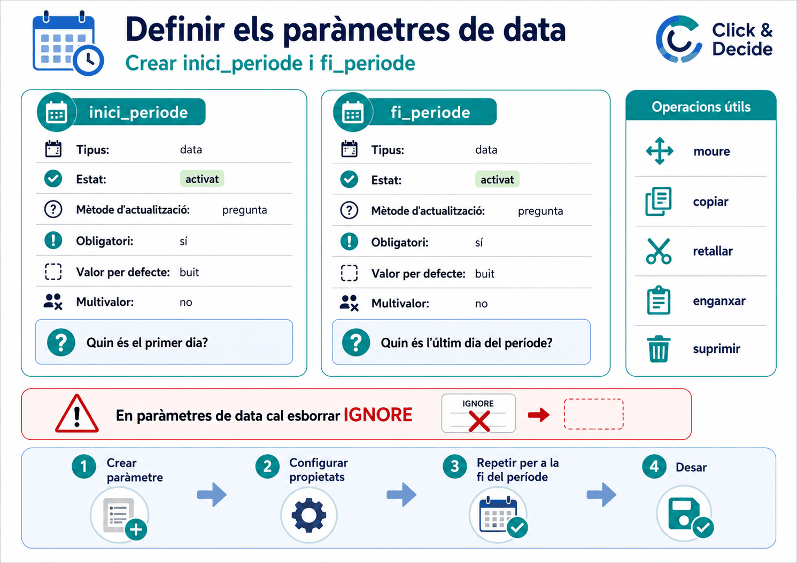
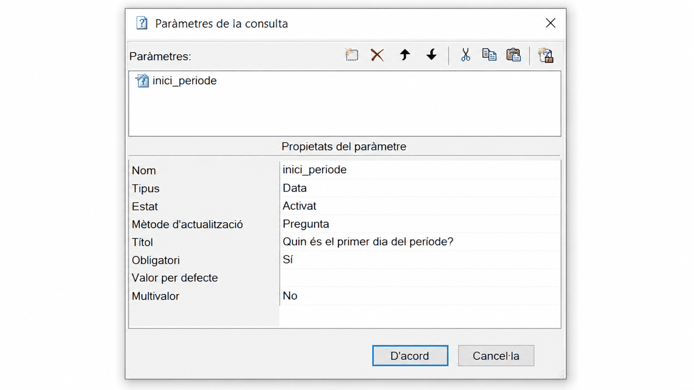
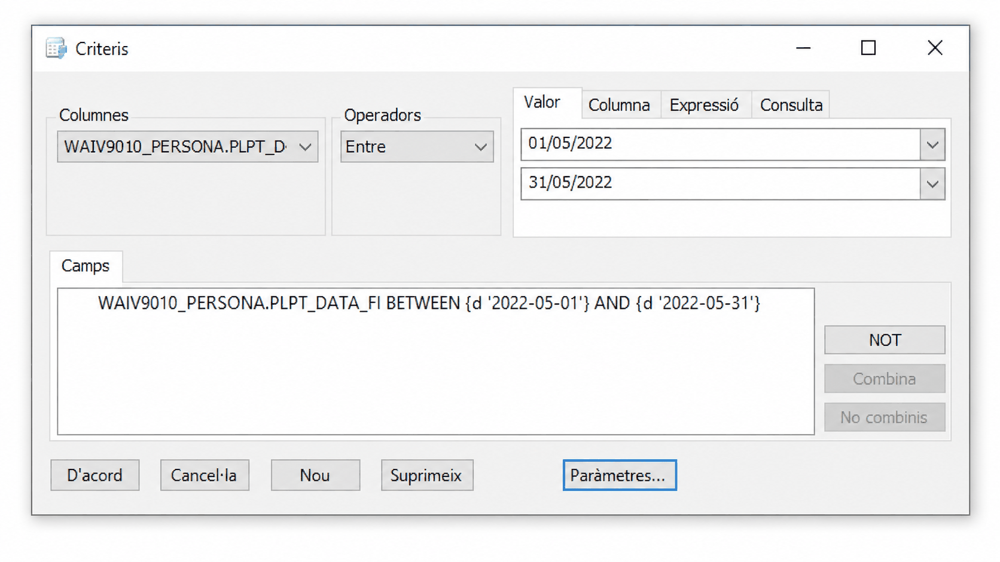
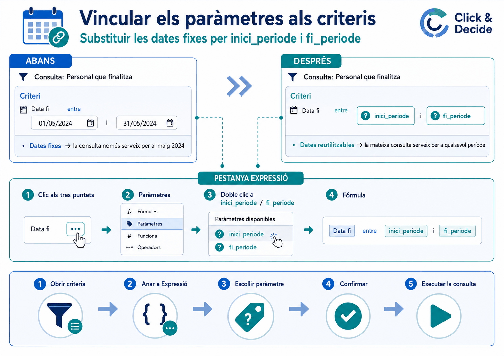
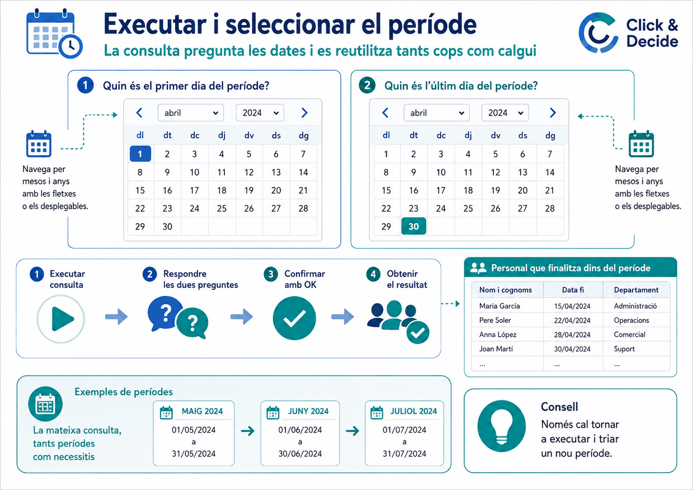

Apartat 1El cas d'ús
Necessiteu cada mes el llistat de treballadors que acaben contracte durant
aquell mes. Sense paràmetres, cada mes toca obrir la consulta, entrar als
criteris i canviar 01/01 i 31/01 per
01/02 i 28/02. Dotze vegades l'any, i cada vegada
amb el risc d'equivocar-se en una data.
Amb paràmetres de data, en executar la consulta apareix un calendari i es tria el període. L'estructura no es toca mai.
Apartat 2Fan falta dos paràmetres
Un període té dos extrems, i cada extrem és un paràmetre. Els noms del material oficial són:
| Nom | Títol que veurà l'usuari |
|---|---|
| inici_periode | Quin és el primer dia del període? |
| fi_periode | Quin és l'últim dia del període? |
Sense espais, ni accents, ni apòstrofs, ni dièresis. Per això
inici_periode i no inici període.
El procediment és el mateix de la unitat 16: finestra Criteris, botó Paràmetres..., i es creen un darrere l'altre.
Apartat 3Les propietats són unes altres
En triar Tipus: Data, la llista de propietats canvia. Desapareixen quatre i n'apareix una de nova. Val la pena veure-ho comparat, perquè si espereu trobar les de la unitat 16 pensareu que el programa falla.
Paràmetre de text
Paràmetre de data
Aquests són els valors que ha de tenir cadascun:
| Propietat | Valor | Per què |
|---|---|---|
| Nom | inici_periode | Sense espais ni accents. |
| Tipus | Data | És el que fa aparèixer el calendari. |
| Estat | Activat | Com sempre. |
| Mètode d'actualització | Pregunta | No Pregunta/Consulta: les dates es trien d'un calendari, no d'una taula. |
| Títol | La pregunta | El que llegirà qui executi la consulta. |
| Obligatori | Sí | Un període sense data no té sentit. |
| Valor per defecte | Buit | L'apartat següent. |
| Multivalor | No | L'apartat 5. |
A la unitat 16 el mètode bo era Pregunta/Consulta, perquè els valors sortien d'una consulta auxiliar. Aquí no cal cap consulta auxiliar: les dates es trien d'un calendari estàndard que ja porta el programa.
Apartat 4L'error del IGNORE
Al camp Valor per defecte hi surt la paraula
IGNORE per defecte. S'ha d'esborrar i deixar
la casella completament buida. Si no ho feu,
el paràmetre de data donarà error i no funcionarà.
Unitat 16, paràmetre de text
Vol dir "si no es tria res, no apliquis el criteri".
Unitat 17, paràmetre de data
Amb el IGNORE posat, el paràmetre falla.
És l'única cosa del curs que es fa al revés segons el tipus, i per això es repeteix tant. Si un paràmetre de data no us funciona, mireu aquesta casella abans que res.

IGNORE hi és, i Multivalor està a Sí. Així no funcionarà.

Apartat 5Multivalor a No
És la propietat que només tenen els paràmetres de data, i la raó és senzilla: una data és única. No té sentit que el primer dia del període siguin tres dies alhora.

No. Són els dos únics canvis, i sense ells falla.
Allà volíeu Selecció: Ampliada precisament per poder
triar diversos valors: interins i laborals. Aquí voleu el contrari,
i per això Multivalor va a No.
Ja que en creeu dos de seguits, aprofiteu la barra d'icones: es poden
copiar i enganxar paràmetres. Feu el primer sencer,
copieu-lo, i al segon només canvieu el nom i el títol. Estalvia repetir
vuit propietats i evita oblidar-se de buidar el IGNORE a la
segona.
Apartat 6Assignar-los amb Entre
Tornem a la finestra de criteris. El camp de data que voleu filtrar, per exemple la data de fi del punter, ha de portar l'operador Entre, que necessita dos valors. Un per a cada paràmetre.
-
Trieu el camp i l'operador
El camp de data, i l'operador Entre. Apareixen dues caixes de valor apilades.
-
Primer valor: el paràmetre d'inici
A la primera caixa, pestanya Expressió, botó dels tres punts, Paràmetres, doble clic sobre
inici_periode, D'acord. -
Segon valor: el paràmetre de fi
El mateix a la segona caixa, però amb
fi_periode.
Al panell Camps, un criteri de dates amb valors fixos es llegeix així:
Les caixes mostren les dates com 01/05/2022, però internament
són en format ISO. És normal i no cal tocar-ho.


Apartat 7El calendari
En prémer executar apareix la finestra emergent amb les dues preguntes que heu escrit als títols. A la dreta de cadascuna hi ha una icona de calendari.
- En fer-hi clic es desplega un calendari interactiu.
- Es pot navegar per anys i mesos i triar el dia exacte.
- Un cop triades les dues dates, OK i la consulta s'executa.
El mes que ve només caldrà obrir la consulta, executar-la i triar les dates noves al calendari. No cal tocar l'estructura mai més, i la pot executar qualsevol persona del servei sense saber què és un criteri.

Apartat 8Errors freqüents
El que passa
El paràmetre de data dóna error.
No surt el calendari, em demana escriure la data.
Només em demana una data.
Executo i no em pregunta res.
Em deixa continuar sense triar dates i surt tot.
El que passa de veritat
No heu esborrat el IGNORE. És el primer que s'ha de mirar.
El tipus no és Data. Reviseu-lo.
Heu creat un sol paràmetre, o n'heu assignat només un a l'operador Entre.
Els heu definit però no assignat. Mateix error número u que a la unitat 16.
Obligatori està a No.
Apartat 9Exercicis
L'informe mensual
ReprodueixMunteu la consulta de treballadors amb data de fi de contracte dins d'un període, amb els dos paràmetres de data.
Executeu-la dues vegades amb períodes diferents.
Comprovació
Han de sortir dues preguntes, cadascuna amb la seva icona de calendari. I el nombre de registres ha de canviar entre les dues execucions.
Si només surt una pregunta, us falta assignar un dels dos paràmetres a la seva caixa de valor.
Torna a posar el IGNORE
Trenca
Amb la consulta funcionant, editeu el paràmetre
inici_periode i escriviu IGNORE al valor per
defecte. Executeu.
Després torneu a buidar-lo i compareu.
Què hauria d'haver passat
Amb el IGNORE posat, el paràmetre de data
falla. Amb la casella buida, funciona.
Val la pena provocar-ho una vegada a propòsit: el dia que us passi de debò, en una consulta amb sis criteris i dos paràmetres, reconeixereu el símptoma en comptes de revisar-ho tot.
I fixeu-vos en la simetria amb la unitat 16: allà, treure el
IGNORE feia que "no triar res" deixés de voler dir
"totes". Aquí, posar-lo trenca el paràmetre. La mateixa casella, dos
comportaments oposats segons el tipus.
Les incidències d'un mes qualsevol
ResolRecupereu la consulta d'incidències vigents en un període de la unitat 13, que tenia les dates escrites a mà.
Convertiu-la en una consulta amb paràmetres, de manera que qualsevol persona pugui demanar-li un mes concret. Digueu quants paràmetres calen i on va cadascun.
Pista
Rellegiu el criteri de la unitat 13. Les dues dates del període hi apareixen, però no juntes en un Entre: una està a la condició de la data d'inici i l'altra a la de la data de fi.
Solució
Dos paràmetres, els mateixos de sempre:
I van creuats, que és el que fa pensar aquest exercici:
La data d'inici de la incidència es compara amb el final del període, i la data de fi amb el principi. És la regla del solapament de la unitat 13, ara amb paràmetres.
Aquí no hi ha cap operador Entre:
cada paràmetre va a un criteri diferent, amb <= i
>=. Un paràmetre es pot fer servir a qualsevol criteri,
no només dins d'un rang.
Apartat 10Llista de comprovació
- Explicar què guanya un informe recurrent amb paràmetres de data.
- Saber que calen dos paràmetres, un per extrem del període.
- Dir quines propietats desapareixen i quina apareix respecte d'un paràmetre de text.
- Triar Pregunta i saber per què no Pregunta/Consulta.
- Esborrar el
IGNOREdel valor per defecte. - Explicar per què Multivalor va a
No. - Copiar i enganxar un paràmetre per crear el segon.
- Assignar els dos paràmetres a les dues caixes de l'operador Entre.
- Fer servir paràmetres de data en criteris separats, sense Entre.
- Diagnosticar un paràmetre de data que falla.
L'última. És el repàs dels errors que fan perdre més temps, i tres d'ells ja els heu vist venir: el doble clic que ho selecciona tot, els camps de text buits i els apòstrofs.